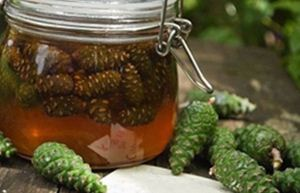
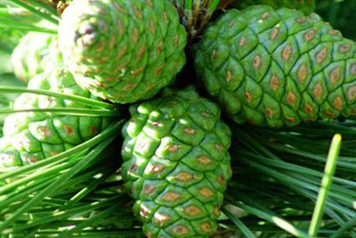
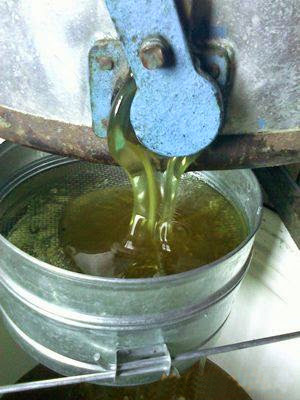

 Спостерігаючи за бджолярями, що торгують в мороз своїм медом на вуличному ринку, я кожного разу мимоволі ловив себе на думці "Як вони ось так усю зиму на вулиці стоять і не простигають"?. А одного разу у випадковій розмові почув від одного з них рецепт хвойного бальзаму на меду. Влітку приготував сам і приймаю його з кінця осені і до цього дня. Поки, тьфу-тьфу-тьфу не хворів. А річ, слід сказати, класна і готується нескладно. Ось і ви спробуйте. Зима. Відповідно до старокитайської теорії п'яти елементів у цю пору року домінує елемент Вода. Організм взимку активно накопичує воду і холод, що в результаті виливається в надлишок слизу. З приходом весни все навкруги починає танути, розтоплюється і слиз, накопичений нами за зиму. Ось тут-то і потекли соплі, заклало ніс, кашель, температура і інші епідемії на зразок грипу і ГРВІ, що вибивають нас з робочого ритму. Як зміцнити свій організм і застерегти себе від простудних захворювань? Перш ніж бігти в аптеку за терафлю, колдрексами і іншою хімією, з рядом побічних ефектів, давайте спробуємо відшукати надійні народні ліки, іноді незаслужено забуті. Спершу звернемося до витоків, і подивимося на застуду через призму китайської традиційної медицини.
У "Трактаті Жовтого імператора про внутрішній", наприклад, "главою ста хвороб, початком ста захворювань" названий
Вітер. Т.е. застуда розвивається при проникненні зовнішнього патогенного Вітру в організм людини через шкірні пори,
рот або ніс. Як правило, Вітер проникає у поєднанні з іншими зовнішніми патогенними чинниками. Це можуть бути Холод
Жар(Вогонь), Вогкість, Сухість, Спека. В цьому випадку, Вітер виступає провідником, що допомагає іншим патогенам
потрапити в організм, маючи можливість поєднуватися з будь-яким з них.
Проте, далеко не усі люди, що піддалися дії зовнішніх патогенних чинників, захворюють. Виявляється, що передумовою
для розвитку застуди є неспроможність захисних сил організму людини, представлених в першу чергу Захисною Ци(вэй ци)
. Захисна Ци циркулює у поверхні тіла людини, захищаючи його від шкідливих дій, вона ж активізується і виганяє
патогенні чинники у разі їх проникнення. Таким чином, можна сказати, що Захисна Ци забезпечує бар'єрні функції
шкіри і слизових оболонок. Але Вэй Ци не лише захищає наш організм, вона виконує ще ряд важливих функцій, зокрема
зігріває поверхню тіла, управляє діяльністю шкірних пір(потових залоз) і волосків.
Однією з причин хвороби може стати слабкість самої Захисної Ци. В цьому випадку незначна патогенна дія, яку здорова,
міцна людина і не помітить, може привести до застуди.
Клінічними проявами застуди є: закладеність носа, нежить, чхання, головний біль, озноб, жар, ломота в тілі.
Оскільки патогенезом застуди є проникнення зовнішніх патогенних чинників, якому протидіє і з якими вступає у
боротьбу Захисна Ци, відповідно, клінічна картина за своєю суттю є відображення цієї боротьби. Іншими словами,
прояви застуди є відображення боротьби між патогенами і Захисною Ци в поверхневих тканинах і структурах(на поверхні)
тіла людини.
При звичайній застуді, що протікає без всяких ускладнень, все розпочинається з поверхневого синдрому, їм же все і
закінчується. Це обумовлено активізацією захисних сил організму, які, не дозволяючи шкідливим чинникам проникнути
більш глибоко, виганяють їх назад назовні. Це може відбуватися як внаслідок лікування, так і без нього у разі, якщо
внутрішні резерви організму в змозі забезпечити процес повного самовыздоровления. Итак, підведемо підсумки.
Застуда - це:
- проникнення в організм зовнішніх патогенних чинників;
- боротьба Захисної Ци з патогенними чинниками;
- порушення діяльності функціональної системи Легенів;
- на початковому етапі застуда представлена поверхневим синдромом.
Клінічна картина застуди у стадії поверхневого синдрому: озноб, жар, ломота, головний біль, закладеність носа,
нежить, може бути невеликий кашель, мова рожева з тонким білим(чи жовтим) нальотом, поверхневий пульс.
Для лікування простудних захворювань традиційна китайська пропонує ряд натуральних лікарських складів,
виготовлених з місцевої сировини. А що робити нам, простим смертним? Як нам зміцнити свою Захисну Ци, якщо
рослини, вказані в старокитайській рецептурі у нас просто не ростуть? Ось тому я і вирішив приготувати
протипростудний бальзам по народному рецепту наших широт і вам рекомендую.
Все, що вам знадобиться, це :
1. два літри зелених соснових шишок, зібраних до середини липня
2. рідкий мед, щоб залити шишки
3. півлітра спиртової настоянки соснових бруньок, зібраних у фазі цвітіння(кінець травня), або така ж кількість
спиртової настоянки прополісу
4. горілка або спирт в кількості не більше 1 літра.

Засипані в трилітрову банку соснові шишки заливаєте доверху медом, закриваєте і настоюєте 2-3 тижні, періодично
збовтуючи. У кінці зливаєте медовий настій в скляну банку, закриваєте і ставите в холодильник, а шишки, що
залишилися, заливаєте спиртом або горілкою на 3 сантиметри згори і настоюєте закритими місяць в темному місці.
Після чого зливаєте спиртовий настій шишок у банку з медовим настоєм і змішуєте їх, не забуваючи додати в цю суміш
0,5 літра спиртової настоянки бруньок сосни. Отриманий бальзам зберігається в холодильнику усю зиму. Приймати його
треба тричі в день по 1 ст. ложці за півгодини до їди. Якщо плануєте давати хвойний бальзам дітям, то залиште їм
частину медового настою, без спиртової складової.
Медово-хвойний бальзам, приготований по цьому рецепту, має неперевершений смак, завдяки якому ви поринете в
атмосферу соснового лісу. Його зігріваючі властивості ефективно пригнічують надмірний слиз в організмі, а ефірні
олії, смоли і флавоноїди чинять знезаражувальну дію на патогенні віруси грипу, туберкульозної палички, герпесу, а
також підвищують імунітет за рахунок збільшення Захисної Ци організму.
 За старих часів, якщо згадати інформацію з книг про Древню Русь, в общині наших предків були дві людини, які викликали священний трепет. Першим був коваль, який міг перетворювати болотяну руду на лемеші, сокири, цвяхи і пили, мечі і лопати. Другим був пасічник. Русичі приписували бджоляру дивовижні таланти. Він міг рятувати людей від псування, міг заговорювати рани і по-справжньому лікувати хворих. Пасіка з давніх часів була природною аптекою. Мед і продукти бджільництва доповнювалися знахарями травами. З меду і трав створювалися відвари, що приносили одужання, позбавлення від мук. Старовинні рецепти оздоровлення за допомогою лікувальних властивостей меду і інших речовин, які виробляють бджоли, актуальні і понині. У лабораторіях фармакологічних фірм розробляють усі нові і нові препарати на основі меду. Йде мед і в косметичну індустрію. Але, якщо ви розташовуєте, якісним медом, то ви можете своїми силами влаштувати вдома і аптеку, і косметологічний кабінет для себе і своєї сім'ї. Довго поширюватися про корисні лікувальні властивості меду не будемо. На нашому сайті знайдете безліч ефективних рецептів. А поки що інформація для маловірів, для тих, хто ще не повірив в унікальну цілющу силу якісного меду, напоєного ароматом лісу і сонцем. Ось лише декілька основних лікувальних властивостей меду : - Мед ці натуральні антивірусні і протигрибкові ліки; - Натуральний мед не піднімає цукор в крові, тому його можна їсти діабетикам; - Ложка меду перед сном лікує безсоння; - Мед допомагає схуднути і покращує травний вогонь, оскільки в східна медицина відносить мед до продуктів з гарячими властивостями; - В косметології мед також знайшов широке застосування; - Медовий масаж здатний зцілити від пухлин грудей, поліпшити стан шкірного покриву; Мед відмінно допомагає старим і ослабленим хворобами людям. Споживання меду швидко відновлює втрачені сили, сприяє затягуванню ран. Одним словом, хто їсть мед, той без хвороб довго проживе!